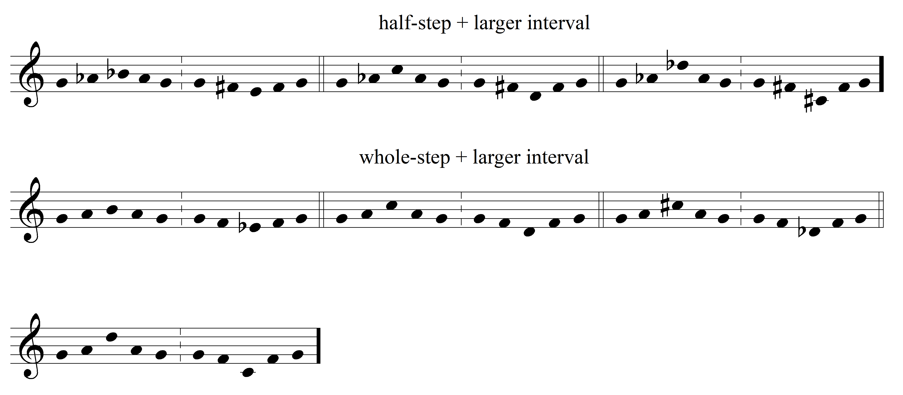

Turn in your singing assignment by Sunday at 11:59 pm through Oregon State University Box
Singing Assignment #2
-Melodies:
* Pick 2 of the following melodies
* Conduct with an appropriate pattern
* Sing the melodies using fixed-do solfège
-Scales:
* Sing the following modes using the same "final":
- Mixolydian, Ionian, Lydian
* Sing the following modes using a different "final":
- Phrygian, Aeolian, Dorian
-Trichords:
* As done in class, sing the following common diatonic trichords

= = = = = = = = = = = = = = = = = = = = = = = = = = = = = = = = = = = = = = = = = =
Submit a video recording to Canvas of yourself performing the requested tasks above. Record yourself at the lowest possible video quality on your device.
Record only a single video of yourself as one uninterrupted performance. No editing, no multiple videos. Strive for fluency in your performance. Don't stop because of one mistake!
You will be evaluated on
* Pitch accuracy
* Rhythmic accuracy
* Whether you conduct and sing solfège syllables
* How fluent your performance is (minimize restarts within your video performance)